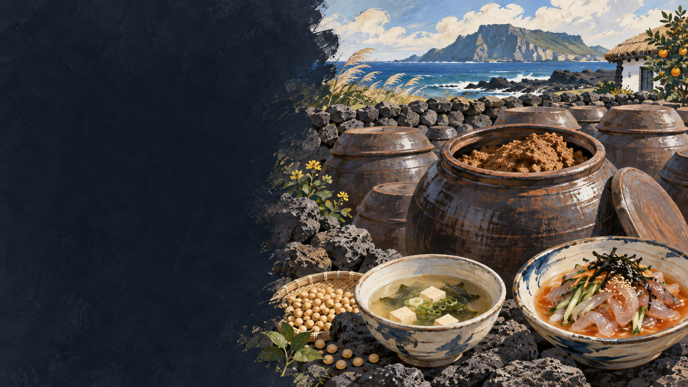

따뜻한 바탕
콩의 구수함이 채소·해조·생선 국물에 깊이를 냅니다.
 제주에서는 이 재료를
제주에서는 이 재료를
JEJU FOOD FIELD GUIDE · 33
콩을 발효한 된장은 국의 깊이를 만들고,
찬 물회에서는 생선과 채소를 이어 줍니다.
제주 음식의 생활문화를 바탕으로 제작한 기록화 · 생성 이미지
제주 밭에서 거둔 콩은 메주와 된장이 되어 오래 두고 쓰는 단백질과 간의 바탕이었습니다. 된장은 국·찌개뿐 아니라 자리물회의 찬 국물에도 풀어 짠맛과 구수함, 발효의 감칠맛을 더합니다.
된장의 향은 생선 냄새를 덮기만 하는 것이 아니라 식초의 산미, 채소의 수분, 생선의 지방을 연결합니다. 멜젓이 작은 생선을 소금에 발효한 액체 감칠맛이라면 된장은 콩 발효의 걸쭉한 기반입니다.
콩을 삶아 메주를 만들고 장독에서 시간을 보내는 기본 흐름을 봅니다.
불린 콩을 푹 삶아 찧습니다.
덩어리로 빚어 띄우고 말립니다.
소금물에 메주를 넣어 발효합니다.
간장과 된장 덩어리를 나눕니다.
국·쌈·물회 양념으로 확장합니다.
구수함과 감칠맛, 생선 향을 받쳐 주는 된장의 쓰임을 나누어 봅니다.
콩의 구수함이 채소·해조·생선 국물에 깊이를 냅니다.
식초·물·채소와 섞여 자리돔의 맛을 받칩니다.
햇볕·바람·염도·관리 방식이 집집마다 다른 장맛을 만듭니다.
유명한 메뉴보다 왜 이런 재료와 방식이 제주 생활에 필요했는지를 먼저 묻습니다.
주재료와 염도, 향과 어울리는 음식을 기준으로 역할의 차이를 비교합니다.
콩·소금
멜 등 작은 생선·소금
걸쭉한 페이스트
액젓 또는 건더기 있는 젓갈
구수함·발효 향
짠맛·해산물 감칠맛
국·쌈·물회
고기 곁들임·간·소스
된장은 뜨거운 국과 차가운 물회라는 서로 다른 음식에서 맛의 뼈대를 맡습니다. 이것이 제주 부엌에서 장이 가진 넓은 역할입니다.
집집마다 콩, 메주 띄우기, 소금물 농도와 숙성 기간이 달라 ‘제주 된장 맛’을 하나로 고정할 수 없습니다.
된장은 양념 한 숟갈이 아니라 국물의 짠맛·향·감칠맛을 설계하는 기반입니다.
장독과 기후만으로 맛을 설명하지 않습니다. 원료 산지, 염도, 메주균, 숙성 기간과 보관 환경을 함께 기록합니다.
지역·가정·생산자에 따라 설명과 조리법이 다를 수 있습니다. 현장 인터뷰를 인용할 때는 당사자의 사용 동의를 받습니다.